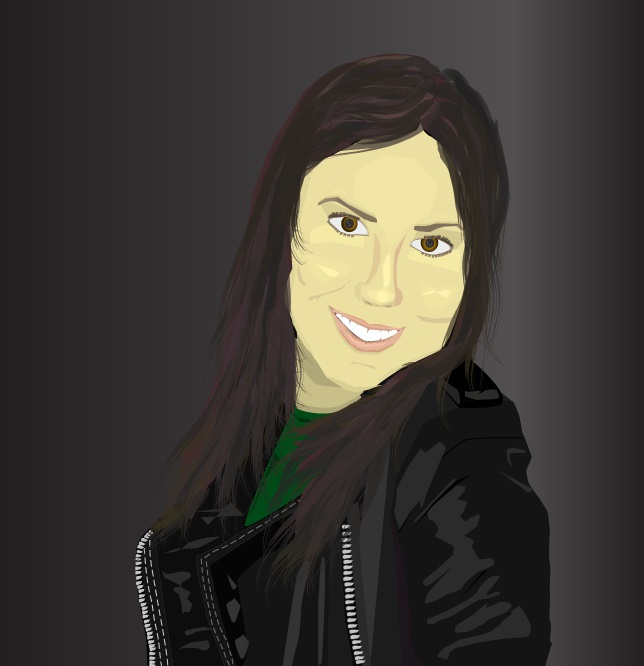

Rubriker:
- Presentation
- Tidigare utbildning
- Jag och programmering
- Arbetserfarenheter
- Bra att veta om mig
- Varför jag sökte till interaktionsdesign
- Framtidsvisioner
Presenation
Jag heter Elpida Tatidou och studerar till Interaktions designer, på Linnéuniversitetet i Kalmar. Jag har precis påbörjat en ny kurs som heter ”Klientbaserad Webbutveckling” där vi ska lära oss hantera HTML, SCC och JAVASCRIP. Som första uppgift skulle jag skapa en webbsida på egen hand med HTML-kodning och resultatet är det som du ser här. Sidan handlar om mig och mitt liv.
Innan jag flyttade till Kalmar bodde jag i Anderstorp som ligger i Småland. Anderstorp är en industristad som är känd för sin motorbana, annars finns det inte så mycket att göra där egentligen. Centrum består av ett Kafé, Ica, fyra pizzerior och tre klädbutiker för den äldre generationen. Därför åker vi till grannstäderna Gislaved och Värnamo för att handla mat eller kläder. I Anderstorp bodde jag i en villa tillsammans med min mamma, pappa och lillebror Andreas. Eftersom att min bror är bara ett år yngre än mig, tillbringade vi mycket tid tillsammans under uppväxten. Trots att vi bråkade mycket lekte vi alltid ihop tills vi började bli lite äldre. Nu pratar vi egentligen så mycket för att vi inte har så mycket gemensamt. Men när vi väl pratar (och inte bråkar) har vi kul ihop!
Min mamma heter Konstantinia och hon är personen jag har umgåtts med under dem senaste åren. Vi är mycket nära och har mycket gemenast som exempelvis att lyssna på musik och att handla kläder. Ett tag hade vi samma storlek på kläderna och då lånade vi alltid varandras kläder. Det har vart mycket svårt att flytta ifrån henne.
Min pappa heter Christos och han älskar bilar och öl. Så långt som jag minns har han alltid arbetat med att reparera bilar, och under dem senaste tio åren har han drivit sin egen bilverkstad. Det tycker han är kul. Under en sommarnär jag inte hade skaffat sommarjobb och behövde ny telefon, fic arbetade jag i hans verkstad. Jag lärde mig att byta däck men inget mer än så. Därför var jag mest i vägen och fick inte jobbade under någon vidare längre period. Fick en ny mobil ändå!
Som du kanske förstår kommer vi ursprungligen från Grekland. Det vi tycker om att göra tillsammans är att resa och utforska Greklands alla öar. Sedan brukar vi hälsa på släktningarna också! Men nu var det ett tag sedan vi gjorde det, eftersom vi har rest så pass mycket i landet så vi är mer sugna på andra länder i Europa.
Tidigare utbildning
Eftersom jag är 19 år gammal, tog jag studenten i våras. På gymnasiet läste jag Teknik och som fördjupning Design. När man går Teknikutbildningen läser man mycket matematik och fysik och det var just dem kurserna som lockade mig till att välja teknik. Men kurserna var rätt svåra och vi hade inga bra lärare för den delen heller! Därför valde jag design inriktningen istället. Design-kurserna var dem roligaste i skolan, där vi fick skapa egna produkter på CAD och sedan göra prototyper på dem också.
Jag och Programmering
När jag var 13 år gammal spelade jag ett online spel som liknade habbo-hotell, men 3-dimensionellt och med manga-avatars. I spelet kunde man skapa egna sidor för sin manga-avatar och då började jag smått lära mig lite om html så att jag kunde få häftiga effekter på sidan. Sedan valde jag en kurs som heter Webbdesign på gymnasiet, där vi skulle skapa en egen hemsida. Dock gick det inte så bra, för att jag körde fast på att försöka centrera min text med html, som jag nu märkt inte går att göra! Tänk om läraren hade informerat mig om detta! Då skulle jag inte haft några problem i den här kursen.
Arbetserfarenheter
Innan jag flyttade till Kalmar jobbade jag på OK-Q8 i Bredaryd, som ligger ca 20 km från Anderstorp. Först praktiserade jag där i ca två veckor och sedan fick jag jobb där på helgerna. Jag tyckte väldigt mycket om att jobba där och att stå i kassan. Innan dess hade ja fått sommarjobb på Anderstorps fotbollsförening, där jag klippte gräset och städade i omklädningsrummet. Det var kanske inte önskejobbet men det var väldigt trevligt att jobba där! Jag har också jobbat på ett dagis och på en legoindustri.
Mina intressen
Mina fritidsintressen är:
- Lyssna på musik och köra bil samtidigt
- Laga mat med familj och vänner
- Äta god mat
- Vara ute på stan och shoppa!
- Följa tv-serier
- Resa
Bra att veta om mig
Jag är bra på:
- Laga mat
- Spela candycrush
- Spendera pengar
Vad jag är mindre bra på:
- jag är dålig på idrott och sport
- dålig på att planera i god tid
- är rätt glömsk
- dåligt lokalsinne
Varför jag sökte till Interaktions Design
Jag ansökte till denna utbildningen eftersom jag tycker det är väldigt kul att arbeta med design och samtidgt lära sig om människans kognition. Jag hade som mål att komma in på Linnéuniversitetet i Växjö för att det inte är så långt hem därifrån. Sedan märkte jag att utbildningen låg i Kalmar men ville ändå ta chansen när man väl kom in. Jag funderade inte så mycket på framtidsvisionen eftersom jag tyckte det var oklart vad den här utbildningen ledde till.
Framtidsvisioner
I framtiden skulle jag vilja flytta till ett annat land med varmare klimat. Kanske till Italien eller Spanien som är så fina länder! Därefter vet jag inte riktigt vad jag vill arbeta med, även om jag har valt den här utbildningen. Jag har faktiskt alltid viljat starta ett eget hotell som jag skulle kunna inreda, men eftersom jag har hört att det kostar en del att starta ett hotell, ska jag jobba som interaktionsdesigner som är nog rätt spännande det också!